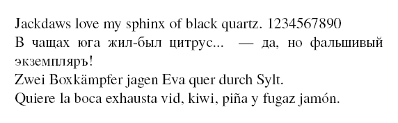
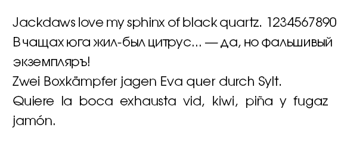
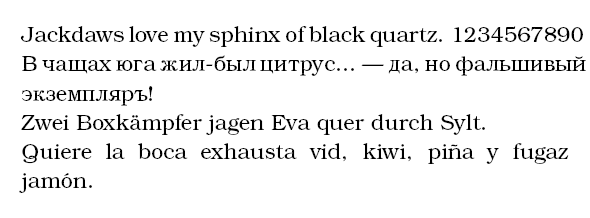
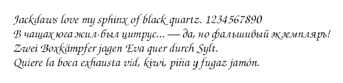
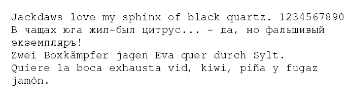
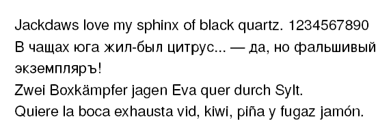
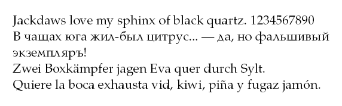
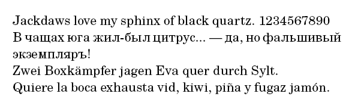

Official website:
Contents
Font Families
Termes (aka Times New Roman)
For MKII:
-
\usetypescript[times][ec] % leave out 'ec' when using XeTeX \setupbodyfont[times,9pt,rm] Hello Termes! 1234567890
For MKIV:
\usetypescript[termes] \setupbodyfont[termes,12pt]
Example: 
{kind=link}
Adventor (aka Avant Garde)
For MKIV:
\usetypescript[adventor] \setupbodyfont[adventor,12pt]
Example: 
{kind=link}
Bonum (aka Bookman)
For MKIV:
\usetypescript[bonum] \setupbodyfont[bonum,12pt]
Example: 
{kind=link}
Chorus (aka Zapf Chancery)
For MKIV:
\usetypescript[chorus] \setupbodyfont[chorus,12pt]
Example: 
{kind=link}
Cursor (aka Courier)
For MKIV:
\usetypescript[cursor] \setupbodyfont[cursor,12pt]
Example: 
{kind=link}
Heros (aka Helvetica)
For MKIV:
\usetypescript[heros] \setupbodyfont[heros,12pt]
Example: 
{kind=link}
Pagella (aka Palatino)
For MKIV:
\usetypescript[pagella] \setupbodyfont[pagella,12pt]
Example: 
{kind=link}
Schola (aka Century Schoolbook)
For MKIV:
\usetypescript[schola] \setupbodyfont[schola,12pt]
Example: 
{kind=link}
Summary
| TeX Gyre name | Adobe name | URW name | TeX Gyre code |
|---|---|---|---|
| Adventor | Adobe AvantGarde | URW Gothic L | ag |
| Bonum | Adobe Bookman | URW Bookman L | bk |
| Chorus | ITC Zapf Chancery | URW Chancery L (Medium Italic) | zc |
| Cursor | Adobe Courier | URW Nimbus Mono L | cr |
| Heros | Adobe Helvetica | URW Nimbus Sans L | hv |
| Pagella | Adobe Palatino | URW Palladio L | pl |
| Schola | Adobe New Century Schoolbook | URW Century Schoolbook L | cs |
| Termes | Adobe Times | Nimbus Roman No9 L | tm |